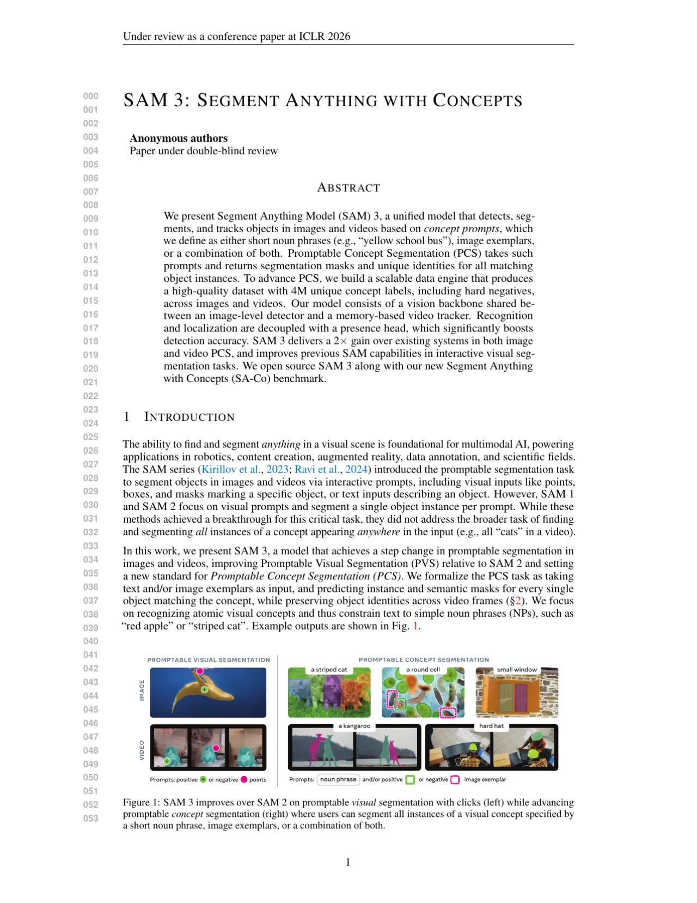
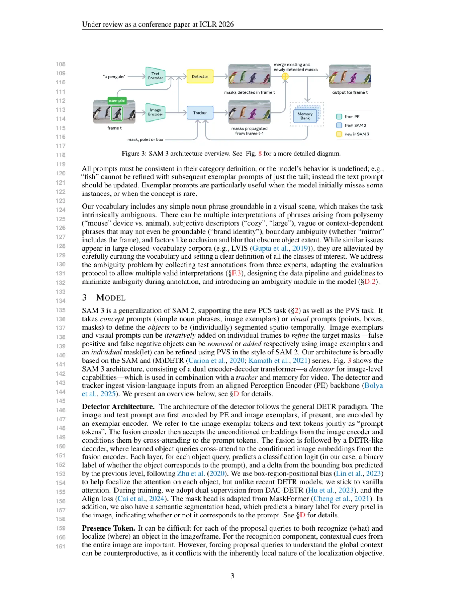
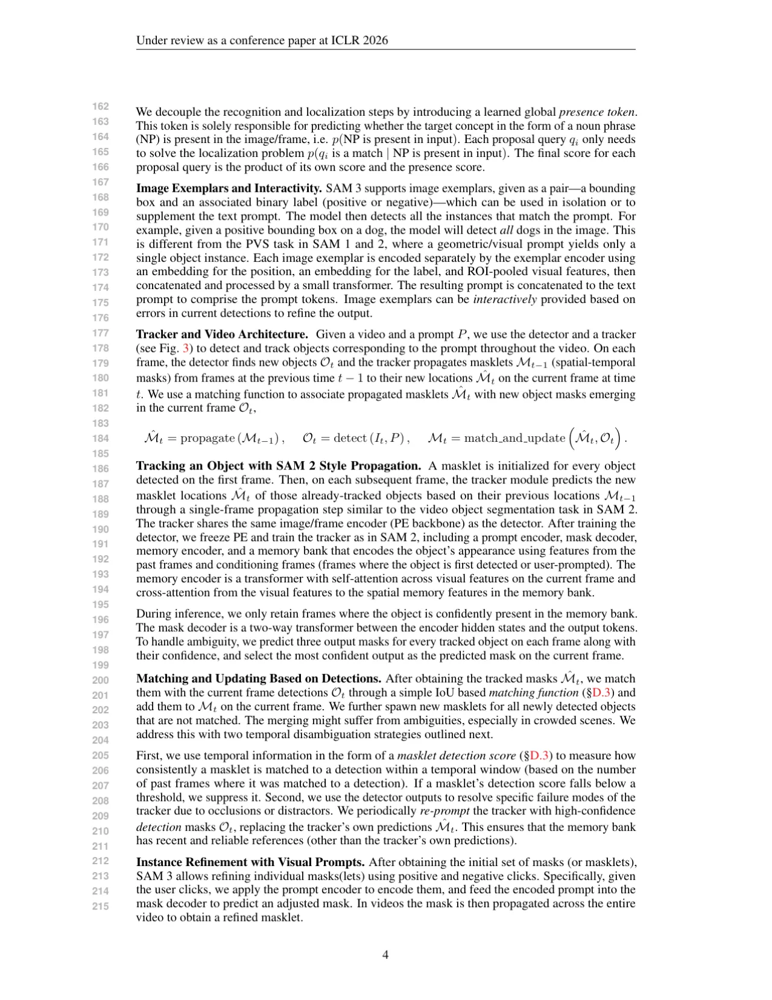
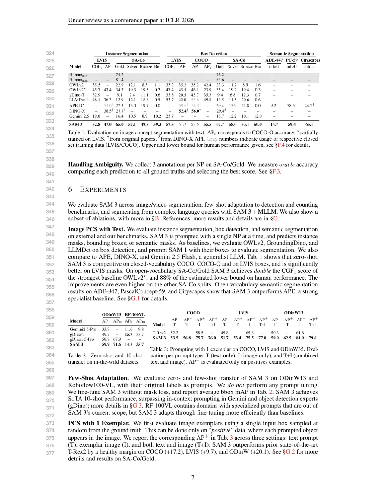

SAM 3 是对 SAM 2 的重大扩展，引入了 Promptable Concept Segmentation (PCS) 任务：给定一个短语名词短语（如 "yellow school bus"）、图像范例（image exemplars），或二者的组合，模型自动检测、分割并追踪图像/视频中所有匹配该概念的实例，同时保留跨帧的目标身份。SAM 3 在 PCS 任务上比现有系统提升约 2×，并在交互式视觉分割（PVS）基准上持续优于 SAM 2。
SAM 1 和 SAM 2 开创了交互式分割先河，但它们依赖点、框、掩码等几何提示，每次只能分割单个目标实例，无法回答"视频中所有的猫在哪里"这类概念级查询。现实应用（机器人、内容创作、AR、数据标注、科学研究）迫切需要一个能够理解视觉概念、并一次性找出所有匹配实例的模型。
"SAM 1 and SAM 2 focus on visual prompts and segment a single object instance per prompt … they did not address the broader task of finding and segmenting all instances of a concept appearing anywhere in the input."

SAM 3 由共享视觉骨干网络 Perception Encoder (PE) 的 检测器（图像级）与 追踪器（内存式视频）构成。检测器基于 DETR 范式，输入文本/图像范例提示后预测所有匹配实例的分割掩码。追踪器继承 SAM 2 的 Transformer 编解码器架构，在视频中传播 masklet（时空掩码）。两者通过四阶段渐进式训练策略联合优化。

传统 DETR 中每个 proposal query 既要识别（what）又要定位（where），两者目标冲突：识别需要全局上下文，而定位本质上是局部的。SAM 3 引入一个可学习的全局 presence token，专门预测目标概念是否出现在图像/帧中（p(NP is present in input)）。每个 proposal query 只需在"概念已出现"的条件下解决定位问题，最终分数 = 自身分数 × presence 分数。消融实验显示该设计将 SA-Co/Gold CGF1 提升 +5.7（从 57.6 到 63.3），image-level MCC 从 0.77 提升至 0.82。
SAM 3 支持图像范例提示（正框 / 负框），可单独使用或与文本提示组合。每个范例由位置嵌入、标签嵌入及 ROI 池化视觉特征拼接后经小型 Transformer 编码，与文本 token 拼接共同构成 prompt tokens。交互式地加入范例后，模型能泛化地检测/抑制相似目标（而不仅修正单个实例），3 次点击后比文字提示提升 +18.6 CGF1，比理想 PVS 修正提升 +9.7。
给定视频与提示 P，检测器在每帧上发现新目标 Ot，追踪器将前一时刻的 masklet Mt-1 传播到当前帧得到 M̂t，随后通过基于 IoU 的匹配函数将二者关联并更新。对于遮挡/干扰物等追踪失败场景，SAM 3 引入两项时序消歧策略：masklet detection score（时序窗口内持续匹配得分）和定期用高置信度检测结果重新初始化追踪器内存库。

数据引擎分四阶段迭代：
SAM 3 在图像/视频 PCS（开放词汇实例分割与追踪）、少样本适应（目标检测/计数）以及与 MLLM 结合的复杂语言查询分割等任务上进行全面评估。评测基准涵盖 LVIS、COCO、SA-Co/Gold/Silver/Bronze/Bio、SA-Co/VEval、ODinW13、RF-100VL、ReasonSeg、OmniLabel 等。
| 基准 | 指标 | 前最优基线 | SAM 3 | 提升 |
|---|---|---|---|---|
| LVIS（实例分割） | mask AP | 38.5 (DINO-X) | 47.0 | +8.5 |
| SA-Co/Gold（PCS） | CGF1 | 36.3 (OWLv2*) | 65.0 | 约 2× |
| SA-Co/Gold（框检测） | CGF1 | 53.0 (LLMDet-L) | 59.3 | +6.3 |
| ADE-847（语义分割） | mIoU | 29.4 (APE-D*) | 53.1 | +23.7 |
| Cityscapes（语义分割） | mIoU | 44.2 (APE-D*) | 59.4 | +15.2 |
注：SA-Co/Gold CGF1 = 65.0 达到人类下限估计（74.2）的 88%。Gemini 2.5（强通用 LLM 基线）CGF1 为 19.8，SAM 3 超出其约 3.3×。
| 数据集 | 提示类型 | T-Rex2（前最优） | SAM 3 |
|---|---|---|---|
| COCO | T+I | — | 62.5 |
| LVIS | T+I | — | 77.0 |
| ODinW35 | T+I | — | 79.6 |
| COCO（文本 T） | T | 52.2 | 53.5 (+1.3) |
| ODinW35（文本 T） | T | 50.3 | 59.9 (+9.6) |
| 数据集 | 指标 | 前最优基线 | SAM 3 |
|---|---|---|---|
| SA-Co/VEval SA-V | pHOTA | 49.0 (LLMDet + SAM 3 Tracker) | 53.9 |
| SA-Co/VEval YT-Temporal-1B | pHOTA | 44.6 | 69.2 |
| SA-Co/VEval SmartGlasses | pHOTA | 57.1 (SAM 3 Det + T-by-D) | 62.9 |
| LVVIS（test mAP） | mAP | 57.3 | 56.9 |
| MOSEv2（VOS J&F） | J&F | 53.8 (SeC) | 60.1 (+6.3) |
SA-Co/VEval 上 SAM 3 达到人类 pHOTA 下限的 >80%。GLEE 基线（未在 SA-Co 上训练）CGF1 接近 0，突出了大规模多概念视频分割的难度。

模拟人机协作：从文本提示出发，每轮迭代添加一个正/负范例框。实验显示：
| 模型 | CountBench Acc↑ | PixMo-Count Acc↑ |
|---|---|---|
| DINO-X | 82.9 | 85.0 |
| Gemini 2.5 Pro | 92.4 | 78.2 |
| Molmo-72B | 92.4 | 88.8 |
| SAM 3 | 95.6 | 87.3 |
SAM 3 可与多种 MLLM（Qwen2.5-VL 7B/72B、Llama4 Maverick、Gemini 2.5 Pro）结合，MLLM 将复杂语言查询分解为 NP 调用 SAM 3，迭代优化输出。零样本情况下在 ReasonSeg 和 OmniLabel 上分别达到 73.8 gIoU 和 46.7 AP，超越所有专用方法（包括 GPT-4o + SegZero 等）。
| 消融项 | 设置 | CGF1 | IL MCC | pmF1 |
|---|---|---|---|---|
| Presence Token | 无 | 57.6 | 0.77 | 74.7 |
| 有 | 63.3 | 0.82 | 77.1 | |
| 训练数据 | 仅 EXT | 30.9 | 0.46 | 66.3 |
| EXT + SYN | 39.7 | 0.57 | 70.6 | |
| EXT + SYN + HQ | 54.3 | 0.74 | 73.5 | |
| 硬负例（每图 #） | 0 个 | 31.8 | 0.44 | 70.2 |
| 5 个 | 44.8 | 0.62 | 71.9 | |
| 30 个 | 49.2 | 0.68 | 72.3 |
消融验证：Presence Token（+5.7 CGF1）、硬负例训练（IL MCC 从 0.44 大幅提升至 0.68）、高质量人工数据 HQ（比纯合成数据 SYN 再提升 +14.6 CGF1）均是关键贡献。
"SAM 3 struggles to generalize to fine-grained out-of-domain concepts (e.g., aircraft types, medical terms) in a zero-shot manner, especially in niche visual domains (e.g., thermal imagery)." 虽然少量微调可快速适应新概念，但零样本表现有限。
"SAM 3 is constrained to simple noun phrase prompts and does not support multi-attribute queries beyond one or two attributes or longer phrases including referring expressions." 即不直接支持复杂指代表达。与 MLLM 结合可缓解此问题，但需要外部大模型参与。
"The cost of SAM 3 inference scales linearly with the number of objects being tracked." 实时 30 FPS 需要多卡并行：2×H200 支持约 10 个目标，4×H200 支持约 28 个，8×H200 支持约 64 个。"There is no shared object-level contextual information to aid in resolving ambiguities in multi-object tracking scenarios."
"Supporting concept-level interactivity for PCS, alongside instance-level interactivity for PVS, poses several challenges. To support instance-level modifications without affecting all other instances of the concept, we enforce a hard 'mode-switch' within the model from concept to instance mode." 作者指出，未来工作可以更无缝地交织概念提示与实例提示。